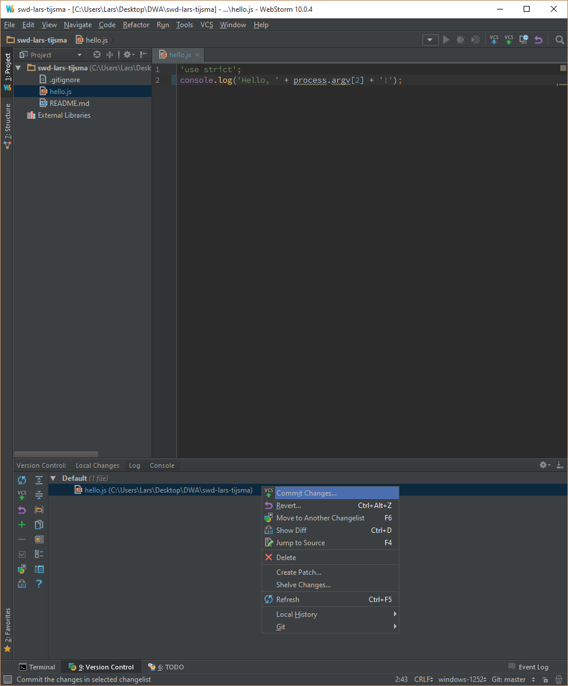
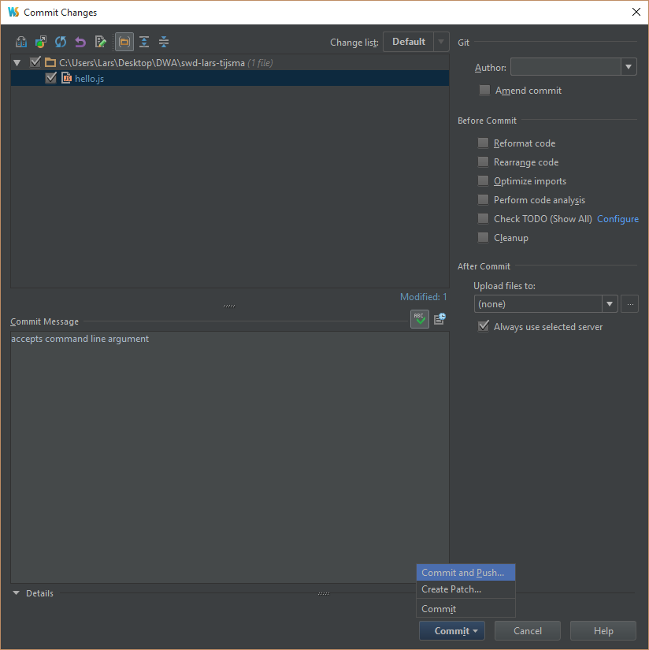

lab 9 Stage, commit and push
Goals
- Learn how to stage, commit and push in one go
Prepare01
Make sure hello.js looks like this again:
File: hello.js
'use strict';
console.log('Hello, ' + process.argv[2] + '!');
Stage, commit and push 02
Execute:
In the Version Control window right click hello.js and selct "Commit Changes..."
Enter a descriptive commit message and select "Commit and Push..."
Note that WebStorm hides the staging area from you. If you want to separate different changes in different commits, you'll need to use the checkboxes in front of the files.
Check your push03
Check in your Log tab that the branches are pointing to the same commit and check in a webbrowser that github also shows your changes